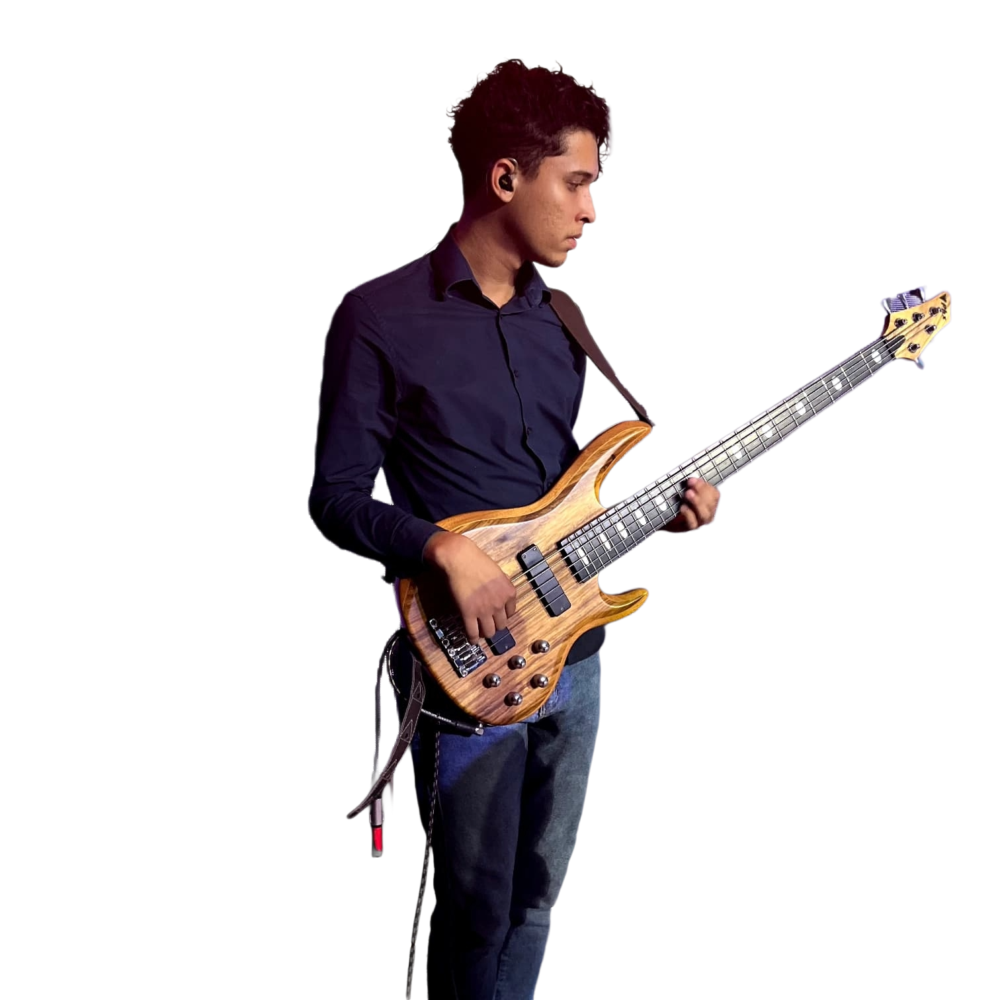

Tiago Xavier é um músico brasileiro que utiliza a música como uma forma de expressão profunda e pessoal. Instrumentista de cordas e compositor independente, sua obra transita entre o experimental, o instrumental e momentos de intensa carga emocional.
Seu trabalho busca explorar contrastes: calmaria e distorção, introspecção e explosão sonora, silêncio e densidade. Cada composição surge como uma tentativa de traduzir sentimentos, memórias e reflexões em paisagens sonoras.
Mais do que seguir um estilo específico, Tiago desenvolve uma linguagem própria, marcada pela liberdade criativa e busca constante por autenticidade.
Tiago Xavier é um músico e compositor brasileiro que construiu sua trajetória artística a partir de uma relação profundamente pessoal com a música. Desde cedo, encontrou nos instrumentos de corda uma forma de expressar emoções e pensamentos que muitas vezes não poderiam ser traduzidos apenas em palavras.
Ao longo do tempo, sua música passou a refletir não apenas influências sonoras, mas também experiências de vida, momentos de introspecção e sua própria visão sobre fé, existência e sentimentos humanos.
Seu processo criativo é marcado pela experimentação e liberdade estética. Em suas composições, elementos do rock alternativo, do lo-fi, do experimental e de estruturas rítmicas pouco convencionais coexistem naturalmente.
Algumas músicas surgem como paisagens sonoras delicadas e introspectivas; outras se transformam em construções densas, com riffs marcantes, distorções e momentos de grande carga emocional.
Dentro dessa jornada artística, Tiago vem desenvolvendo uma sequência de trabalhos independentes que representam diferentes momentos de sua evolução musical.
Entre eles está “Fragmentos”, um EP que reúne diferentes atmosferas e experimentações, refletindo pedaços de experiências e sentimentos transformados em música. Outro projeto importante é “Dreamcore”, onde explora uma abordagem mais etérea e introspectiva, criando ambientes sonoros que dialogam com a sensação de memória e contemplação. Posteriormente, lançou “Waterfall”, um EP conceitual que encerra uma trilogia formada por esses trabalhos. O projeto foi pensado como um fluxo emocional, no qual a sequência das músicas acompanha uma transformação gradual: do estado mais calmo e contemplativo até momentos de maior densidade e intensidade sonora.
Além desses projetos, Tiago continua desenvolvendo novas ideias musicais, incluindo trabalhos instrumentais com foco especial no contrabaixo — instrumento que ocupa um papel central em sua identidade musical. Mais do que técnica ou performance, sua música nasce da busca por sinceridade artística. Cada composição funciona como um espaço onde emoções, reflexões e experiências pessoais podem ganhar forma através do som. Seguindo um caminho independente, Tiago continua explorando novas possibilidades sonoras e expandindo sua linguagem musical, sempre guiado pelo mesmo princípio: transformar sentimentos em música.
A música que faço não nasce da necessidade de provar habilidade técnica, mas da necessidade de expressar algo verdadeiro. Entre o silêncio e o ruído, encontro um espaço onde emoções podem existir sem explicação. Algumas delas aparecem em forma de melodias tranquilas; outras surgem como distorção, peso e intensidade.
Minha música é feita de contrastes — paz e turbulência, introspecção e explosão. Esses opostos não se anulam: eles coexistem, assim como na própria experiência humana. Criar música, para mim, é transformar sentimentos em som e permitir que cada pessoa encontre nessas paisagens sonoras algo que dialogue com sua própria história.